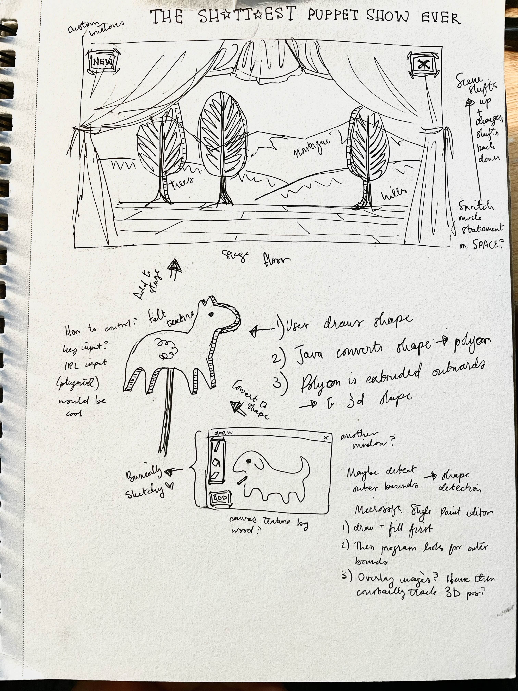

|  |
I wanted to push people into interactions between each other, especially the awkwardness of being put into a situation and having to adapt to it as a team. I decided to create a form of puppet show, where users could draw their own low graphics puppets and then interact with them on a stage. By creating a low-pressure environment through the simplicity of the program and low-res graphics, I hoped that people would be encouraged to simply create shapes and start interacting with each other and the space. The program itself is coded in Java and using the javaFX library, with hand drawn textures and images by me. For the installation, The stage was projected onto a large screen, using a dual-cursor program and two physical computer mice to allow multiple users to interact with the program at once, making it a more collaborative process. A full overview of the program's capabilities are available below. |
|
|
|